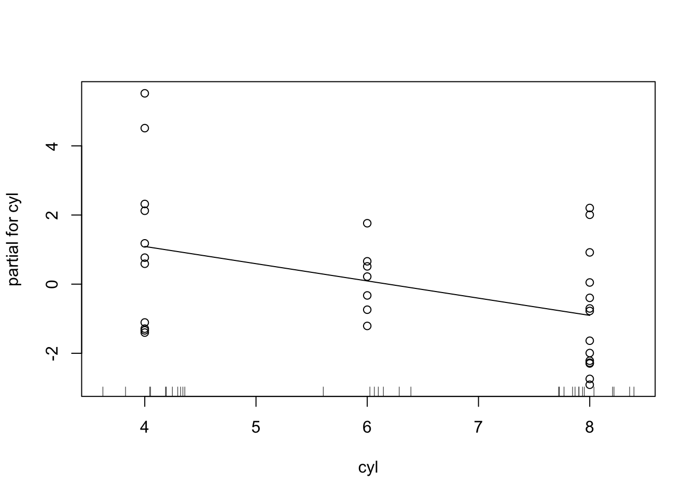
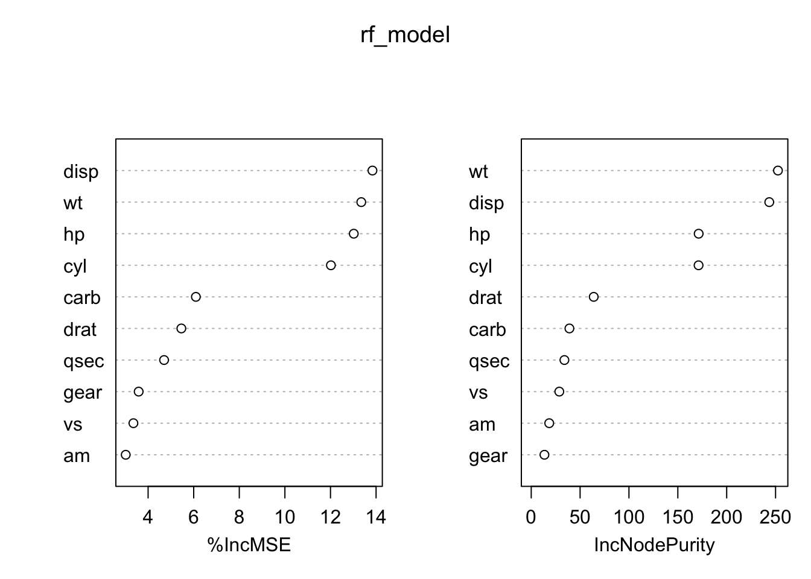
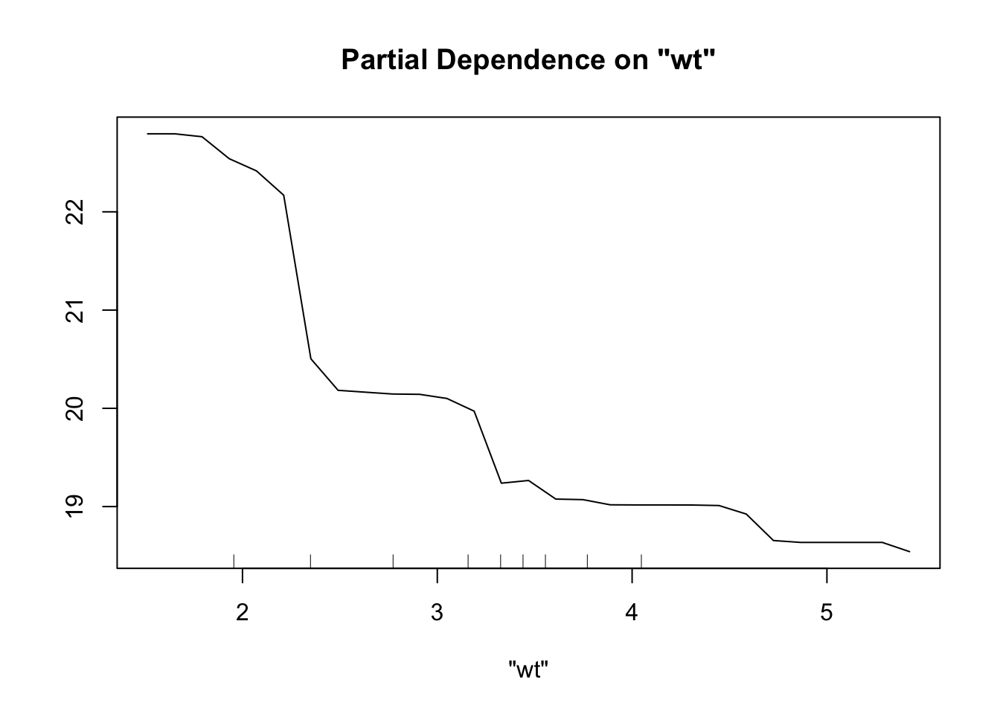
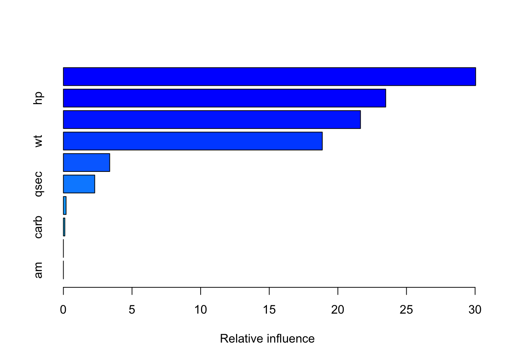
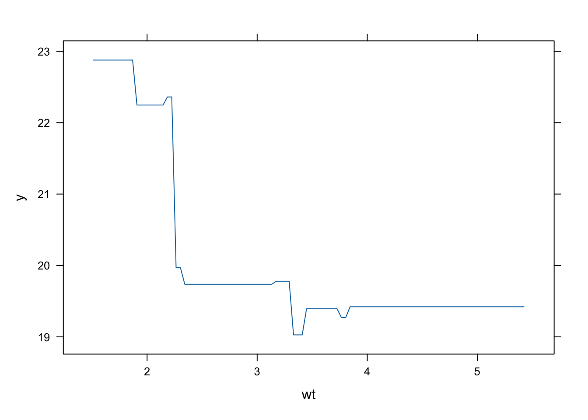
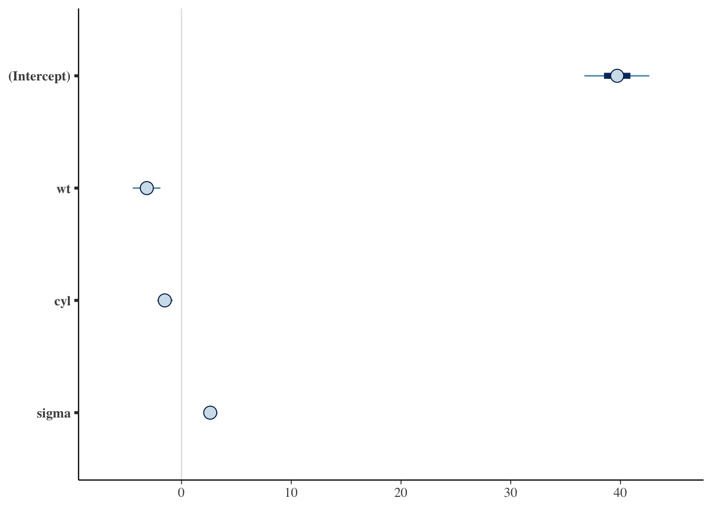

Code
# R's ML approach emphasizes:
# - Statistical interpretability
# - Model diagnostics
# - Uncertainty quantification
# - Research reproducibility
# - Academic rigorWhile Python dominates in deep learning and engineering-focused machine learning, R provides unique advantages through its statistical foundation. R’s approach to machine learning emphasizes interpretability, statistical rigor, and research-grade implementations that complement Python’s strengths.
R’s machine learning is grounded in statistical theory:
# R's ML approach emphasizes:
# - Statistical interpretability
# - Model diagnostics
# - Uncertainty quantification
# - Research reproducibility
# - Academic rigorR provides peer-reviewed machine learning packages:
# R's ML packages are:
# - Peer-reviewed
# - Published in statistical journals
# - Used in academic research
# - Well-documented
# - Statistically validatedR excels in statistical learning:
library(stats)
library(MASS)
# Linear models with comprehensive diagnostics
lm_model <- lm(mpg ~ wt + cyl + hp, data = mtcars)
summary(lm_model)
Call:
lm(formula = mpg ~ wt + cyl + hp, data = mtcars)
Residuals:
Min 1Q Median 3Q Max
-3.9290 -1.5598 -0.5311 1.1850 5.8986
Coefficients:
Estimate Std. Error t value Pr(>|t|)
(Intercept) 38.75179 1.78686 21.687 < 2e-16 ***
wt -3.16697 0.74058 -4.276 0.000199 ***
cyl -0.94162 0.55092 -1.709 0.098480 .
hp -0.01804 0.01188 -1.519 0.140015
---
Signif. codes: 0 '***' 0.001 '**' 0.01 '*' 0.05 '.' 0.1 ' ' 1
Residual standard error: 2.512 on 28 degrees of freedom
Multiple R-squared: 0.8431, Adjusted R-squared: 0.8263
F-statistic: 50.17 on 3 and 28 DF, p-value: 2.184e-11# Model diagnostics
par(mfrow = c(2, 2))
plot(lm_model)# Stepwise selection
step_model <- stepAIC(lm_model, direction = "both")Start: AIC=62.66
mpg ~ wt + cyl + hp
Df Sum of Sq RSS AIC
<none> 176.62 62.665
- hp 1 14.551 191.17 63.198
- cyl 1 18.427 195.05 63.840
- wt 1 115.354 291.98 76.750R provides sophisticated GAM implementations:
library(mgcv)
library(gam)
# Generalized additive models
gam_model <- gam(mpg ~ s(wt) + s(hp) + cyl, data = mtcars)
# Model summary with significance tests
summary(gam_model)
Call: gam(formula = mpg ~ s(wt) + s(hp) + cyl, data = mtcars)
Deviance Residuals:
Min 1Q Median 3Q Max
-2.4914 -1.3267 -0.1171 0.9720 4.4302
(Dispersion Parameter for gaussian family taken to be 4.5484)
Null Deviance: 1126.047 on 31 degrees of freedom
Residual Deviance: 100.0641 on 22 degrees of freedom
AIC: 149.2945
Number of Local Scoring Iterations: NA
Anova for Parametric Effects
Df Sum Sq Mean Sq F value Pr(>F)
s(wt) 1 777.91 777.91 171.0300 7.491e-12 ***
s(hp) 1 97.78 97.78 21.4982 0.0001274 ***
cyl 1 5.16 5.16 1.1351 0.2982414
Residuals 22 100.06 4.55
---
Signif. codes: 0 '***' 0.001 '**' 0.01 '*' 0.05 '.' 0.1 ' ' 1
Anova for Nonparametric Effects
Npar Df Npar F Pr(F)
(Intercept)
s(wt) 3 2.4696 0.0887 .
s(hp) 3 2.0110 0.1418
cyl
---
Signif. codes: 0 '***' 0.001 '**' 0.01 '*' 0.05 '.' 0.1 ' ' 1# Visualization of smooth terms
plot(gam_model, residuals = TRUE)

R provides statistical random forest implementations:
library(randomForest)
# Random forest with statistical output
rf_model <- randomForest(mpg ~ ., data = mtcars, importance = TRUE)
# Variable importance with statistical significance
importance(rf_model) %IncMSE IncNodePurity
cyl 10.430602 149.82197
disp 13.260061 255.04756
hp 13.209487 197.68691
drat 5.144084 69.25182
wt 13.278713 266.17468
qsec 4.045781 38.24761
vs 3.654842 24.49344
am 3.216016 21.69473
gear 4.448834 19.06412
carb 6.819901 27.89746varImpPlot(rf_model)
# Partial dependence plots
partialPlot(rf_model, mtcars, "wt")
R excels in statistical gradient boosting:
library(gbm)
# Gradient boosting with statistical diagnostics
# Adjusted parameters for small dataset
gbm_model <- gbm(mpg ~ ., data = mtcars,
distribution = "gaussian",
n.trees = 100,
interaction.depth = 2,
bag.fraction = 0.8,
n.minobsinnode = 3)
# Variable importance
summary(gbm_model)
var rel.inf
hp hp 36.6891016
disp disp 27.3722769
wt wt 17.2029808
cyl cyl 12.1016447
drat drat 3.5245861
qsec qsec 2.2800101
carb carb 0.4987144
gear gear 0.3306854
vs vs 0.0000000
am am 0.0000000# Partial dependence plots
plot(gbm_model, i.var = "wt")
R provides comprehensive validation tools:
library(caret)
library(boot)
# Cross-validation with statistical rigor
cv_results <- cv.glm(mtcars, lm_model, K = 10)
cv_results$delta[1] NaN NaN# Caret for systematic model comparison
control <- trainControl(method = "cv", number = 10)
model_comparison <- train(mpg ~ ., data = mtcars,
method = "rf",
trControl = control)R excels in model diagnostics:
# Comprehensive model diagnostics
library(car)
# Residual analysis
residualPlots(lm_model) Test stat Pr(>|Test stat|)
wt 2.6276 0.014007 *
cyl 1.6311 0.114476
hp 1.8147 0.080701 .
Tukey test 3.2103 0.001326 **
---
Signif. codes: 0 '***' 0.001 '**' 0.01 '*' 0.05 '.' 0.1 ' ' 1# Influence diagnostics
influencePlot(lm_model) StudRes Hat CookD
Lincoln Continental 0.1065775 0.24373270 0.0009486833
Chrysler Imperial 2.2153833 0.23547715 0.3316313326
Fiat 128 2.5303244 0.08274176 0.1210330843
Toyota Corolla 2.7498370 0.09961207 0.1694339333
Maserati Bora 0.6073374 0.46356582 0.0815260489# Multicollinearity
vif(lm_model) wt cyl hp
2.580486 4.757456 3.258481 # Normality tests
shapiro.test(residuals(lm_model))
Shapiro-Wilk normality test
data: residuals(lm_model)
W = 0.93455, p-value = 0.05252R provides sophisticated Bayesian ML:
library(rstan)
library(brms)
library(rstanarm)
# Bayesian linear regression
bayes_model <- stan_glm(mpg ~ wt + cyl, data = mtcars,
family = gaussian(),
prior = normal(0, 10))
SAMPLING FOR MODEL 'continuous' NOW (CHAIN 1).
Chain 1:
Chain 1: Gradient evaluation took 0.00174 seconds
Chain 1: 1000 transitions using 10 leapfrog steps per transition would take 17.4 seconds.
Chain 1: Adjust your expectations accordingly!
Chain 1:
Chain 1:
Chain 1: Iteration: 1 / 2000 [ 0%] (Warmup)
Chain 1: Iteration: 200 / 2000 [ 10%] (Warmup)
Chain 1: Iteration: 400 / 2000 [ 20%] (Warmup)
Chain 1: Iteration: 600 / 2000 [ 30%] (Warmup)
Chain 1: Iteration: 800 / 2000 [ 40%] (Warmup)
Chain 1: Iteration: 1000 / 2000 [ 50%] (Warmup)
Chain 1: Iteration: 1001 / 2000 [ 50%] (Sampling)
Chain 1: Iteration: 1200 / 2000 [ 60%] (Sampling)
Chain 1: Iteration: 1400 / 2000 [ 70%] (Sampling)
Chain 1: Iteration: 1600 / 2000 [ 80%] (Sampling)
Chain 1: Iteration: 1800 / 2000 [ 90%] (Sampling)
Chain 1: Iteration: 2000 / 2000 [100%] (Sampling)
Chain 1:
Chain 1: Elapsed Time: 0.039 seconds (Warm-up)
Chain 1: 0.039 seconds (Sampling)
Chain 1: 0.078 seconds (Total)
Chain 1:
SAMPLING FOR MODEL 'continuous' NOW (CHAIN 2).
Chain 2:
Chain 2: Gradient evaluation took 1e-05 seconds
Chain 2: 1000 transitions using 10 leapfrog steps per transition would take 0.1 seconds.
Chain 2: Adjust your expectations accordingly!
Chain 2:
Chain 2:
Chain 2: Iteration: 1 / 2000 [ 0%] (Warmup)
Chain 2: Iteration: 200 / 2000 [ 10%] (Warmup)
Chain 2: Iteration: 400 / 2000 [ 20%] (Warmup)
Chain 2: Iteration: 600 / 2000 [ 30%] (Warmup)
Chain 2: Iteration: 800 / 2000 [ 40%] (Warmup)
Chain 2: Iteration: 1000 / 2000 [ 50%] (Warmup)
Chain 2: Iteration: 1001 / 2000 [ 50%] (Sampling)
Chain 2: Iteration: 1200 / 2000 [ 60%] (Sampling)
Chain 2: Iteration: 1400 / 2000 [ 70%] (Sampling)
Chain 2: Iteration: 1600 / 2000 [ 80%] (Sampling)
Chain 2: Iteration: 1800 / 2000 [ 90%] (Sampling)
Chain 2: Iteration: 2000 / 2000 [100%] (Sampling)
Chain 2:
Chain 2: Elapsed Time: 0.039 seconds (Warm-up)
Chain 2: 0.035 seconds (Sampling)
Chain 2: 0.074 seconds (Total)
Chain 2:
SAMPLING FOR MODEL 'continuous' NOW (CHAIN 3).
Chain 3:
Chain 3: Gradient evaluation took 1.1e-05 seconds
Chain 3: 1000 transitions using 10 leapfrog steps per transition would take 0.11 seconds.
Chain 3: Adjust your expectations accordingly!
Chain 3:
Chain 3:
Chain 3: Iteration: 1 / 2000 [ 0%] (Warmup)
Chain 3: Iteration: 200 / 2000 [ 10%] (Warmup)
Chain 3: Iteration: 400 / 2000 [ 20%] (Warmup)
Chain 3: Iteration: 600 / 2000 [ 30%] (Warmup)
Chain 3: Iteration: 800 / 2000 [ 40%] (Warmup)
Chain 3: Iteration: 1000 / 2000 [ 50%] (Warmup)
Chain 3: Iteration: 1001 / 2000 [ 50%] (Sampling)
Chain 3: Iteration: 1200 / 2000 [ 60%] (Sampling)
Chain 3: Iteration: 1400 / 2000 [ 70%] (Sampling)
Chain 3: Iteration: 1600 / 2000 [ 80%] (Sampling)
Chain 3: Iteration: 1800 / 2000 [ 90%] (Sampling)
Chain 3: Iteration: 2000 / 2000 [100%] (Sampling)
Chain 3:
Chain 3: Elapsed Time: 0.038 seconds (Warm-up)
Chain 3: 0.037 seconds (Sampling)
Chain 3: 0.075 seconds (Total)
Chain 3:
SAMPLING FOR MODEL 'continuous' NOW (CHAIN 4).
Chain 4:
Chain 4: Gradient evaluation took 1.1e-05 seconds
Chain 4: 1000 transitions using 10 leapfrog steps per transition would take 0.11 seconds.
Chain 4: Adjust your expectations accordingly!
Chain 4:
Chain 4:
Chain 4: Iteration: 1 / 2000 [ 0%] (Warmup)
Chain 4: Iteration: 200 / 2000 [ 10%] (Warmup)
Chain 4: Iteration: 400 / 2000 [ 20%] (Warmup)
Chain 4: Iteration: 600 / 2000 [ 30%] (Warmup)
Chain 4: Iteration: 800 / 2000 [ 40%] (Warmup)
Chain 4: Iteration: 1000 / 2000 [ 50%] (Warmup)
Chain 4: Iteration: 1001 / 2000 [ 50%] (Sampling)
Chain 4: Iteration: 1200 / 2000 [ 60%] (Sampling)
Chain 4: Iteration: 1400 / 2000 [ 70%] (Sampling)
Chain 4: Iteration: 1600 / 2000 [ 80%] (Sampling)
Chain 4: Iteration: 1800 / 2000 [ 90%] (Sampling)
Chain 4: Iteration: 2000 / 2000 [100%] (Sampling)
Chain 4:
Chain 4: Elapsed Time: 0.039 seconds (Warm-up)
Chain 4: 0.038 seconds (Sampling)
Chain 4: 0.077 seconds (Total)
Chain 4: # Posterior analysis
posterior_interval(bayes_model) 5% 95%
(Intercept) 36.795656 42.6775001
wt -4.482159 -1.8563452
cyl -2.221416 -0.8273734
sigma 2.143716 3.3295279plot(bayes_model)
R excels in probabilistic programming:
# Stan integration for complex models
# - Hierarchical models
# - Time series models
# - Spatial models
# - Custom likelihoods
# - Advanced inferenceR emphasizes model interpretability:
library(iml)
library(DALEX)
# Model interpretability tools
# - Partial dependence plots
# - Individual conditional expectation
# - Feature importance
# - Model explanations
# - Fairness analysisR provides explainable AI tools:
# Explainable AI capabilities
# - LIME implementation
# - SHAP values
# - Model-agnostic explanations
# - Feature interactions
# - Decision pathsPython’s ML is engineering-focused:
# Python ML emphasizes:
# - Scalability
# - Production deployment
# - Deep learning
# - Engineering efficiency
# - Less statistical rigorPython lacks statistical depth:
# Python has limited:
# - Statistical diagnostics
# - Model interpretability
# - Uncertainty quantification
# - Research reproducibility
# - Academic validation| Feature | R | Python |
|---|---|---|
| Statistical Foundation | Excellent | Limited |
| Model Diagnostics | Comprehensive | Basic |
| Interpretability | Advanced | Limited |
| Research Integration | Strong | Weak |
| Uncertainty Quantification | Sophisticated | Basic |
| Academic Validation | Peer-reviewed | Variable |
| Deep Learning | Limited | Excellent |
| Production Deployment | Limited | Excellent |
# R ensures statistical rigor in ML:
# - Proper model diagnostics
# - Uncertainty quantification
# - Statistical significance testing
# - Model validation
# - Research reproducibility# R emphasizes interpretability:
# - Model explanations
# - Feature importance
# - Partial dependence plots
# - Statistical inference
# - Research transparency# R's ML packages are:
# - Peer-reviewed
# - Published in journals
# - Used in research
# - Well-documented
# - Statistically validatedR and Python can complement each other:
# R for:
# - Statistical modeling
# - Model diagnostics
# - Research validation
# - Interpretability
# - Academic publishing
# Python for:
# - Deep learning
# - Production deployment
# - Large-scale processing
# - Engineering workflows
# - Web applications# Optimal workflow:
# 1. R for exploratory analysis and statistical modeling
# 2. Python for deep learning and production deployment
# 3. R for model interpretation and validation
# 4. Python for scaling and deploymentR’s machine learning approach provides:
While Python excels in deep learning and production deployment, R provides unique advantages for statistical machine learning, research, and interpretable AI applications.
This concludes our series on “R Beats Python” - exploring the specific areas where R provides superior capabilities for data science and statistical analysis.